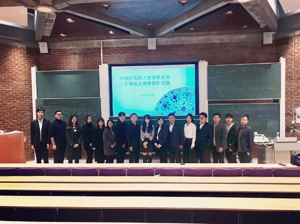
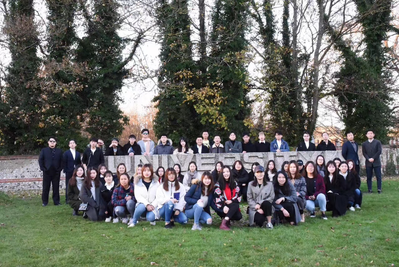

|
|
|
Professional summary |
Talented Administrative professional with background in computer science. Extensive knowledge of using Microsoft Excel software. Meticulous photography editing and colour correcting skilled at using Photoshop to create exceptional presentations meeting diverse needs. Dedicated to maximizing customer satisfaction and exceeding objectives with organized approach and strong multitasking abilities.
|  | Once served as the deputy minister of the Entrepreneurship and Employment Development Department of the Chinese Association of Sussex University. He has strong job execution ability and can efficiently complete the tasks of the Association and departments. He also serves as a responsible assistant and person in charge of many activities. The management team can actively coordinate the relations between the members of the department while leading the team work. |
| I am enthusiastic and outgoing, willing to help others, full of interest in accepting new things and new challenges, good at coordinating affairs and sharing the work pressure of members; strong self-learning ability, able to use MS Office, Excel, power point and other office software, Office execution and efficiency are high; active thinking, good communication, organization and coordination skills. |  |
Skills |